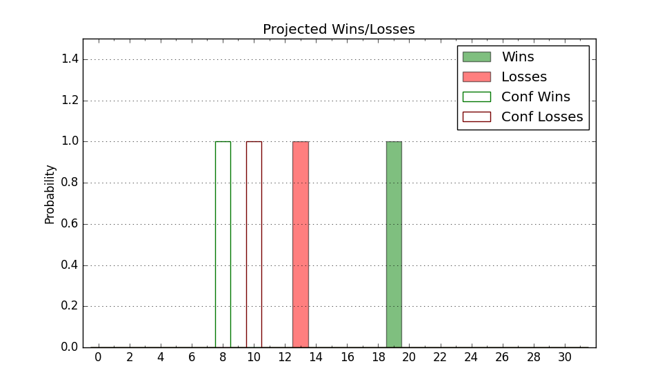

| Home | Game Probabilities | Conferences | Preseason Predictions | Odds Charts | NCAA Tournament |
| City: | Pullman, Washington | |
| Conference: | West Coast (6th)
| |
| Record: | 8-10 (Conf) 19-13 (Overall) | |
| Ratings: | Comp.: 6.1 (108th) Net: 6.1 (108th) Off: 111.2 (94th) Def: 105.2 (151st) SoR: 0.2 (92nd) |
| Remaining | ||||||
|---|---|---|---|---|---|---|
| Date | Opponent | Win Prob | Pred. | |||
| Previous | Game Score | |||||
| Date | Opponent | Win Prob | Result | Off | Def | Net |
| 11/4 | Portland St. (177) | 79.1% | W 100-92 | 10.2 | -18.0 | -7.7 |
| 11/8 | Bradley (92) | 58.1% | W 91-74 | 18.1 | 0.7 | 18.9 |
| 11/11 | Idaho (256) | 88.8% | W 90-67 | -2.4 | 13.0 | 10.6 |
| 11/15 | (N) Iowa (67) | 30.9% | L 66-76 | -25.4 | 17.7 | -7.7 |
| 11/18 | Northern Colorado (127) | 70.7% | W 83-69 | -0.0 | 11.4 | 11.4 |
| 11/21 | (N) Eastern Washington (260) | 82.1% | W 96-81 | 2.7 | 0.5 | 3.2 |
| 11/26 | Fresno St. (249) | 88.0% | W 84-73 | -9.3 | 4.4 | -4.9 |
| 11/27 | (N) Fresno St. (249) | 79.9% | W 84-73 | -8.8 | 8.6 | -0.2 |
| 11/27 | (N) SMU (38) | 18.5% | L 60-77 | -11.8 | 2.3 | -9.5 |
| 12/2 | @Nevada (63) | 19.2% | W 68-57 | -4.7 | 36.1 | 31.4 |
| 12/7 | (N) Boise St. (37) | 18.4% | W 74-69 | 0.5 | 21.4 | 21.9 |
| 12/14 | Missouri St. (219) | 84.5% | W 91-78 | 14.0 | -14.1 | -0.1 |
| 12/18 | @Washington (101) | 32.8% | L 73-89 | -12.2 | -4.8 | -17.0 |
| 12/21 | (N) Northern Iowa (95) | 44.5% | W 76-68 | 8.0 | 7.5 | 15.6 |
| 12/28 | @Portland (272) | 73.4% | W 89-73 | 5.5 | 3.5 | 9.0 |
| 12/30 | Loyola Marymount (151) | 75.2% | W 73-59 | -7.8 | 20.1 | 12.3 |
| 1/4 | San Francisco (66) | 44.9% | W 91-82 | 22.9 | -3.3 | 19.5 |
| 1/9 | Pacific (270) | 90.3% | L 94-95 | -2.3 | -22.0 | -24.4 |
| 1/11 | @Gonzaga (8) | 4.6% | L 75-88 | 13.0 | 0.9 | 13.8 |
| 1/16 | @San Diego (285) | 75.4% | W 65-61 | -11.0 | 12.0 | 1.0 |
| 1/18 | Portland (272) | 90.4% | W 92-70 | 4.4 | 3.5 | 7.8 |
| 1/23 | @Santa Clara (51) | 14.0% | L 65-93 | 0.6 | -10.9 | -10.3 |
| 1/25 | Saint Mary's (21) | 21.6% | L 75-80 | 19.4 | -15.5 | 3.9 |
| 1/30 | @Pacific (270) | 73.3% | L 68-70 | -4.5 | -6.5 | -11.0 |
| 2/1 | @San Francisco (66) | 19.3% | L 51-75 | -26.7 | 5.5 | -21.2 |
| 2/6 | @Oregon St. (76) | 22.6% | L 74-82 | 12.8 | -7.7 | 5.0 |
| 2/8 | Pepperdine (231) | 85.8% | W 87-86 | -3.1 | -15.1 | -18.2 |
| 2/15 | @Saint Mary's (21) | 7.5% | L 56-77 | -10.3 | -3.8 | -14.2 |
| 2/19 | Gonzaga (8) | 14.2% | L 63-84 | -10.7 | -3.0 | -13.8 |
| 2/22 | Santa Clara (51) | 35.7% | L 79-109 | 3.3 | -32.1 | -28.8 |
| 2/27 | San Diego (285) | 91.3% | W 93-86 | -1.3 | -13.7 | -15.1 |
| 3/1 | @Pepperdine (231) | 63.9% | W 90-83 | 10.6 | -8.0 | 2.6 |
| Stats & Trends | |||||
|---|---|---|---|---|---|
| Current | Day | Week | Month | Season | |
| Composite | 6.1 | +0.0 | -0.4 | -3.6 | -3.9 |
| Comp Rank | 108 | -2 | -5 | -21 | -26 |
| Net Efficiency | 6.1 | +0.0 | -0.4 | -3.6 | -- |
| Net Rank | 108 | -1 | -4 | -20 | -- |
| Off Efficiency | 111.2 | +0.3 | +0.4 | -0.3 | -- |
| Off Rank | 94 | +4 | +4 | -10 | -- |
| Def Efficiency | 105.2 | -0.3 | -0.8 | -3.2 | -- |
| Def Rank | 151 | -2 | -11 | -42 | -- |
| SoS Rank | 96 | -2 | -4 | +36 | -- |
| Exp. Wins | 19.0 | +0.4 | +0.5 | -1.6 | -0.5 |
| Exp. Conf Wins | 8.0 | +0.4 | +0.5 | -1.6 | -3.1 |
| Conf Champ Prob | 0.0 | -- | -- | -0.0 | -4.6 |

| Advanced Stats | ||
|---|---|---|
| Stat | Value | Rank |
| Off Eff FG % | 0.582 | 18 |
| Off Ast Ratio | 0.178 | 29 |
| Off ORB% | 0.327 | 72 |
| Off TO Rate | 0.185 | 356 |
| Off FT Ratio | 0.334 | 160 |
| Def Eff FG % | 0.494 | 118 |
| Def Ast Ratio | 0.130 | 69 |
| Def ORB% | 0.299 | 233 |
| Def TO Rate | 0.145 | 189 |
| Def FT Ratio | 0.319 | 154 |